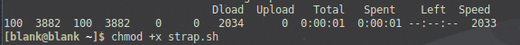
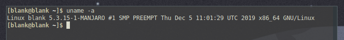

Although there are a lot of Pentesting operating systems available Black arch seems to be a really good arch based distribution and it contains a ton of tools the one could make use of. I decided to review and make a guide based on black arch linux.
Now before getting started i would like to say that the popular Distributions such as Kali linux, Parrot Security OS, Black box are still an obvious choice for someone that is getting started in Pentesting.
Black Arch is yet another distro based on Arch linux, and people like me who has been using Arch as a primary operating system always have to either install tools manually from AUR (Arch User Repository), Install a Pentesting Distro like kail in a VM or build tools from source. Black arch makes that much simpler in a lot of cases. I wouldnt call it the most stable release, but if your some one that is familiar with linux, this is something that you would like.
#1 How do you install Black Arch ?
Well, yo could get started here https://blackarch.org/blackarch-guide-en.pdf
The guide contains a bunch of details on installing Black arch. You have different options to do that
-
Install Black Arch as you Primary OS / in Vm ( Download the ISO image from here https://blackarch.org/downloads.html )
-
Install Black Arch on top of your existing Arch Linux distro i.e : Manjaro
-
Build on from scratch.
In my case, i am using Manjaro i3 distro as my daily driver, so i will be install Black Arch on top of my existing Arch Distro. If you would like to go for other options check out the guide or let know know down in the comments.
#2 Adding Black Arch to your repository.
- Open your terminal and type the following command, this is going to download the strap.sh using the CLI curl check out this url (https://curl.haxx.se/) if your interested to learn more about curl.
$ curl -O https://blackarch.org/strap.sh

step 1
- Give the file executable permission by running the following command.
$ chmod +x strap.sh

step 2
- Execute the file by running the following command, make sure that you execute it as a superuser.
$ sudo ./strap.sh

step 3
- update your system using the following command
$ sudo pacman -Syyu
- Once this process is over you can install either selected category from black arch repo that you want or you can install all of the tools available.
#3 View and Install tools from Black Arch repo:
- To view all available categories in Black Arch, run the following command.
$ pacman -Sg | grep blackarch
– “S” to Sync
– “ g” to list groups
– “|” to get the output and feed that as an input to another command
– “grep” to search for pattern in this case its searching for “blackarch”
step 4
- To install the package that you need you can choose the one that you need and install.
Run the following command in your terminal.
$ pacman -S blackarch -
– ie, if i wanted to insall blackarch-webapp i would replace the with webapp
$ pacman -S blackarch-webapp
- To install all the available tools that are available in Black Arch Repo you would run the following command.
$ pacman -S blackarch
#4 An Alternate way to install Black Arch:
Blackman is a package available in AUR, if you have AUR Enabled in your Distro you can go ahead and install blackman either through CLI or through Pamac.
- To install via CLI, run the following command
$ pacman -S blackman
+To install via Pamac –> open pamac –> search for blackman from AUR –> Install
step 5
#5 Things to do while installing packages:
There are times where you have to choose proper dependencies, i’ve attached an example below.

step 6
- Linux headers, if you run into this phase you have to choose your linux header in my case i use 5.3 kernal, so ill be choosing it. In order to find your kernal information run the following command.
$ uname -a

step 7
#6 Few useful blackman commands:
- Download, compile and install packages:
$ sudo blackman -i package
- Download, compile and install whole category:
$ sudo blackman -g group
- Download, compile and install all of the BlackArch tools:
$ sudo blackman -a
- To list the blackarch categories:
$ blackman -l
- To list category tools:
$ blackman -p category
Thats, pretty much it about setting up your Black arch, the following post would be detailed covering each tool thats available in blackarch.
Good Luck !
-blankdash
link to my original post : https://blankdash.wordpress.com/blankdash/arch-black-0x0/

 but i would say that arch can be overwhelming because of updates and all i used clean arch and after that installing all the tools i want now one can say that’s also a lot of work installing tools but you can use frameworks to install the tools you want easily imo but loved your writeup.
but i would say that arch can be overwhelming because of updates and all i used clean arch and after that installing all the tools i want now one can say that’s also a lot of work installing tools but you can use frameworks to install the tools you want easily imo but loved your writeup.{kind=link}